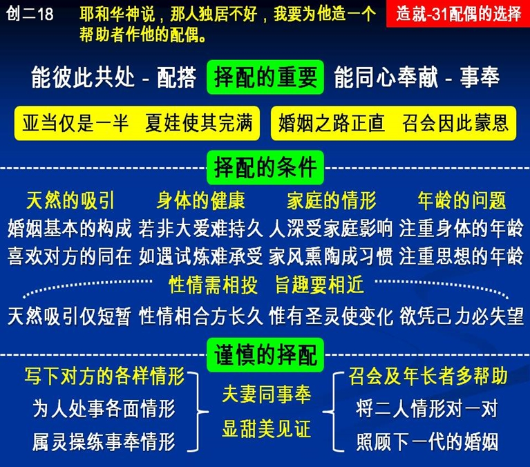

诗歌：342首、补 328首
重要经文：
创世记二章十八至十九节：耶和华神说，那人独居不好，我要为他造一个帮助者作他的配偶。耶和华神把祂用土所造的野地各样走兽，和空中各样飞鸟，都带到那人面前，看他叫什么；那人怎样叫各样的活物，那就是它的名。
创世记二章二十二至二十四节：耶和华神就用那人身上所取的肋骨，建造成一个女人，领她到那人跟前。那人说，这一次这是我骨中的骨，肉中的肉，可以称这为女人，因为这是从男人身上取出来的。因此，人要离开父母，与妻子联合，二人成为一体。
纲目要点：
壹 择配的重要－能与人共处并奉献给主。
贰 择配的条件：
一 天然的吸引、身体的健康。
二 家庭的情形、年龄的问题。
三 性情相投，旨趣相近。
参 必须注意择配：
一 把对方的各种情形一样一样的写下来。
二 这一个人的身体如何？遗传如何？家庭如何？仔细写下来。
三 他私下对于人如何，对于朋友如何，对于家里的人如何。
四 看属灵的情形是不是完全奉献的，是不是欢喜为着主活的。
五 下一代的家庭如果不好，召会要受到许多的滞累。
六 在召会中常有许多年轻的家庭，同心事奉主，走神的路。
信息选读：
在神的眼中择配的重要
在神创造人的时候，在神的眼中，亚当是半个人，夏娃是另外半个人；两个半人合起来，才是一个完整的人。所以人在世上，除了神给恩赐守童身的以外，其余的人都得结婚。圣经的教师差不多都相信，神的儿女择配，就是找那另外的一半。神造了你这一半，还造了另外的一半。你要找出那另外的一半，你才能够成功作一个。所以，择配的意思，就是为着能够成全这『一个。』所有的两个半个，仍然是半个的时候，都没有用。你必须找到另外的一半，那才是对的。如果两个半个在一起，仍然是两个半个，这一个婚姻定规是出事情的。我们是相信说，神所配合的，人不可分开。所以我们要去寻找神所配合的那一个。盼望青年弟兄姊妹对于婚姻，在神面前要把心开起来，没有成见，冷静的对付这件事；是客观的对付，不是主观的对付。因为主观的对付，很容易心太热，头也太热，许多地方变作看不见，看不清楚。要学习冷静的，客观的，把每一件事带到神面前好好考虑过。不要情感受冲动，过分热切的一下就跳进去。要知道，婚姻，在基督徒是跳得进去，跳不出来的。
天然的吸引雅各娶拉结，总比雅各娶利亚容易成功。所以，我们绝不轻视天然的吸引。并不是说，他是一个弟兄就行，或者她是一个姊妹就行。你和别人彼此作弟兄，作姊妹，没有吸引的问题在里面。你如果要叫两个人结婚，就不能一点不顾到婚姻构成的成分。请记得，在婚姻的构成里，必须有这一个吸引的成分。互相的吸引，乃是相爱最高的表示。主叫你和所有的信徒作弟兄姊妹，这里面没有吸引的问题。但是，主若叫你与一个人结婚，那就必须有吸引的问题。保罗也是说，你自己以为可行的，你自己欢喜这样行的，就可以行。这就给我们看见，在婚姻这件事上，总得你自己乐意才行。这一种的吸引，乃是婚姻的一个基本条件。
身体的健康
我们承认，有的人结婚，乃是为要服侍对方身体的软弱。在英国有一个弟兄，因为一个姊妹眼瞎了，所以要同她结婚。这样的事，在召会的历史中也相当的多。人因为有很大的爱，所以超越过身体的软弱。可是另一面我们要注意，在普通的情形之下，不可能每一个人都有大的爱。在普通的情形之下，身体的软弱会伤害婚姻的成功。有一边身体的毛病一多，另一边的牺牲太大，自然而然会叫这一个婚姻失败。
在婚姻里面，一个身体有软弱，接受对方服侍的人，只有两个可能：一个是自私，一个是有感觉。我认识一个弟兄，生病非常严重，结果他的师母要出去作事来养这一个家。所以他的师母白天出去作工，晚上回家来还当家。这种情形，你只能盼望作一段的时间，不能盼望作太久的时间。这位师母可以作一个月，作两个月，但是，不可以一直作下去。一个成功的婚姻，男女双方健康的情形，应该差不多。不能有一边有严重的病。不然的话，在特别受试炼的时候，不容易，受不起。
家庭的情形
外国人有句俗语说，我娶她，我没有娶她的家。但是请记得，没有这样的事。一个女孩子出嫁，全家都跟着她来。人一结婚，丈夫的全家都来，妻子的全家也都来。为什么？因为一个人多少总像他家里的人。你只要看一看，对方的家庭里有没有道德的标准，有没有高尚的理想；对于事情的看法是如何，有没有严格的标准；这一个家里的人，男人对女人的态度如何，女人对男人的态度如何。你只要把这些问题稍微看一下，你定规知道将来你的家庭如何。一个男孩子，或者一个女孩子，在家庭里受了十几年或二十几年的薰陶，就是他对于那个家庭不满意，但是等到他和你结婚以后，他家庭里的作风，他家庭里的办法，迟迟早早这一些作风都要显出来。
性情的相合是维持婚姻的最主要条件
我在上海曾碰到一对夫妻，吵得不得了。我就问弟兄，『你当初怎么娶她的呢？』他说，『我当初看到她的时候，就是看见她两个眼珠非常黑。』这就是天然的吸引。他就是喜欢两个眼珠的黑。但是，结婚过了一点时候，眼珠的黑和白统统忘记了，记得的是她喜欢乾净，我不喜欢乾净；她喜欢放松，我喜欢严紧；她喜欢快，我喜欢慢。请你们记得，性情的问题是长久的，天然吸引的问题是暂时的。
不能盼望改变对方的性情
对于性情的问题，总想我能够改变他。请你记得，绝没有这样的事。就是圣灵要改变他，也得花上多少工夫，何况你？请你记得，婚姻绝没有这么大的能力，能改变他的性情。有许多弟兄，有许多姊妹，虽然知道对方性情不相同，总是盼望能改变他。但是，过了两年，三年，改不来。我告诉你们，世界上如果有一个盼望是定规要失望的，就是这一件事。我还没有看见过，一个丈夫改变过一个妻子。我也没有看见过，一个妻子改变过一个丈夫。我在上海作工的这十几年中，我把四分之一的时间花在家庭的问题上。我要很重的对你们说，你们绝不应该把性情不同的弟兄姊妹摆在一起。如果摆在一起，结局定规不好。
能与人共处
有一个性情方面，为人方面的事，也必须注意，就是我要娶的这一个妻子，我要嫁的这一个丈夫，到底能不能与人共处？如果一个弟兄在家庭里，和父亲也不对，和母亲也不对，和弟兄也不对，和姊妹也不对；如果你嫁给他，婚姻定规不能美满。如果一个姊妹，和这一个人也不对，和那一个人也不对，一直和人争，将来你作她的配偶，你作她的对象，你知道也不能美满。每一个人要结婚，有一个基本的条件，必须是能同处的。他的生活总是和人合不起来，岂能就是和你一个合得起来？这成分少得很，很难。因为全世界没有一个人叫他看得上眼，只有你一个叫他看得上眼。但是恐怕到了结婚之后，连你也看不上眼了。这是很难的事。所以，择配的时候，你必须看他有没有基本为人的条件，能不能与人同居得来。
课程复习：
一 请说明在神的眼中择配的重要性为何?
二 在择配时，天然的吸引与身体的健康之重要为何？
三 外国人俗语说， 「我娶她，并没有娶她的家」 。这句话，你怎么看？
四 为什么性情相合是维持婚姻最主要的条件？
五 世界上如果有一个盼望是定规要失望的，是指哪一件事？
